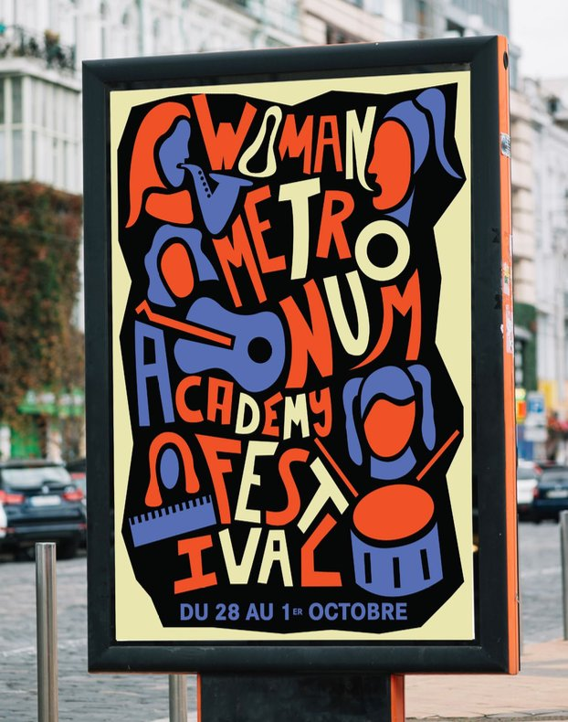
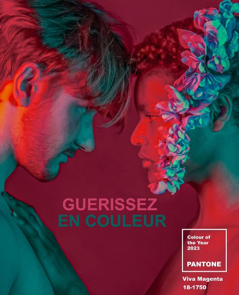

Bonjour, je suis Amélie, étudiante en graphisme au lycée des Arènes.
Woman Metronum Academy Festival

Affiche pour le Woman Metronum Academy Festival, inspirée par le style de Saul Bass. J'ai puisé mon inspiration dans les caractéristiques de ses œuvres, telles que les formes géométriques, une typographie dessinée imposante, une mise en page dynamique et une palette de couleurs limitée.
Couleur de l'année Pantone

La demande était de faire une photo en mettant en avant la couleur de l'année de Pantone : le Viva Magenta. Mon concept est basé sur une des caractéristiques de la couleur : la guérison. Viva Magenta nous offre l'assurance et la motivation dont nous avons besoin pour faire face à des événements perturbateurs à long terme.